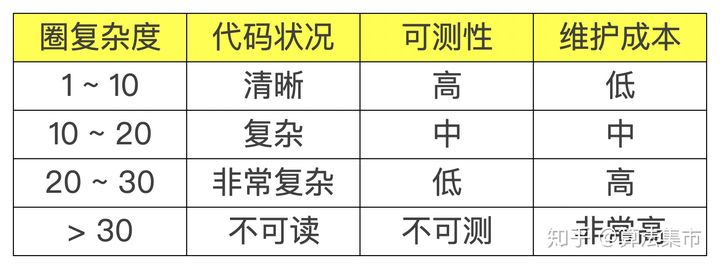
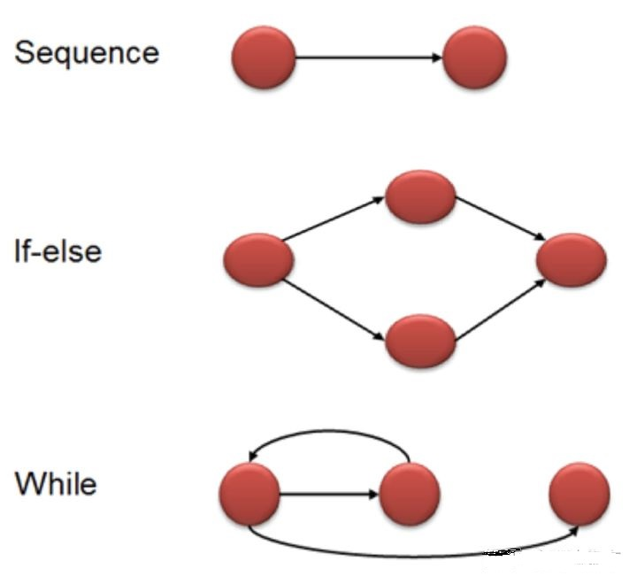

# 过复杂函数 (权重 5)
过复杂函数指的是圈复杂度超过 15 的函数，过复杂函数越多，理解和维护就越困难
# 圈复杂度
圈复杂度（Cyclomatic complexity，CC）也称为条件复杂度，是一种衡量代码复杂度的标准，其符号为 V (G)。
圈复杂度可以用来衡量一个模块判定结构的复杂程度，其数量上表现为独立路径的条数，也可理解为覆盖所有的可能情况最少使用的测试用例个数。
基础路径测试
麦凯布最早提出一种称为 “基础路径测试”（Basis Path Testing）的软件测试方式，测试程序中的每一线性独立路径，所需的测试用例个数即为程序的圈复杂度。
圈复杂度可应用在程序的子程序、模块、方法或类别

# 圈复杂度的计算
圈复杂度有两种计算方法：点边计算法和节点判定法。
# 点边计算法
圈复杂度由程序的控制流图来计算：有向图的节点对应程序中个别的代码，而若一个程序运行后会立刻运行另一代码，则会有边连接另一代码对应的节点。

如上图所示，E表示控制流图中边的数量，N表示控制流图中节点的数量。
圈复杂度的计算公式为：V(G) = E - N + 2
下面是正常顺序、if else 和 while 的控制流程图。

- 正常顺序的圈复杂度为 1；
- if else 的圈复杂度为 2；
- while 的圈复杂度也为 2。
# 节点判定法
圈复杂度的计算还有另外一种更直观的方法，因为圈复杂度所反映的是 “判定条件” 的数量，所以圈复杂度实际上就是等于判定节点的数量再加上 1。
对应的计算公式为：V (G) = P + 1
其中 P 为判定节点数，常见的判定节点有：
- if 语句
- while 语句
- for 语句
- case 语句
- catch 语句
- and 和 or 布尔操作
- ? : 三元运算符
对于多分支的 case 结构或 if - else if - else 结构，统计判定节点的个数时需要特别注意：必须统计全部实际的判定节点数，也即每个 else if 语句，以及每个 case 语句，都应该算为一个判定节点。
# 降低圈复杂度的方法
- 简化、合并条件表达式
- 将条件判定提炼出独立函数
- 将大函数拆成小函数
- 以明确函数取代参数
- 替换算法
# 超深栈函数（权重 8）
超深栈函数指的是调用栈的深度超过 7 的函数，调用栈越深，调试定位缺陷的难度越大。递归函数最容易出现超深栈的函数。
# 函数调用的过程
线程执行的基本行为是函数调用，每次函数调用的数据都是通过 Java 栈传递的。Java 栈与数据结构上的栈有类似的含义，它是一块先进后出的数据结构，只支持入栈和出栈两种操作。Java 栈的主要内容是栈帧。每次函数调用都会有一个对应的栈帧被压入 Java 栈，每次函数调用结束 (无论是正常返回或者抛出异常)，都会有一个栈帧被弹出 Java 栈。
如图所示，函数 1 中调用函数 2，函数 2 中调用函数 3，函数 3 调用函数 4。函数 1 被调用，栈帧 1 入栈；函数 2 被调用，栈帧 2 入栈；函数 3 被调用，栈帧 3 入栈；函数 4 被调用，栈帧 4 入栈；函数 4 调用完毕，栈帧 4 出栈；函数 3 调用完毕，栈帧 3 出栈，一直到函数 1 出栈。

每次函数调用都会生成对应的栈帧，从而占用一定的内存。由于 HotSpot 虚拟机并不区分本地方法栈和 Java 栈，栈内存大小由 - Xss 参数设定。关于本地方法栈和 Java 栈，在 Java 虚拟机规范中定义了两种异常。
线程的请求栈的深度大于虚拟机所允许的深度，将抛出 StackOverflowError 异常
虚拟机在扩展栈时无法申请到足够的内存时，将抛出 OutOfMemoryError 异常
# 优化方法
- 用循环的方式代替递归方式
- 解决递归调用栈溢出的方法是普通递归改为用尾递归的方式
- 减少递归层次
# 超大函数（权重 5）
超大函数指超过 400 行的函数，理解和维护工作量比较大。
这里提供一些解决方案
大量重复的代码导致，常见的如数据库的连接，日志的操作，异常校验，权限校验等
解决方案：将数据库连接，日志操作这些重复的操作抽成一个工具类。异常校验和权限校验这些通过 AOP 或者拦截器进行处理，不单独在业务逻辑中处理。
复杂的业务逻辑
解决方案：复杂的业务逻辑有时候是无法避免的，只能分析代码将一些通用的业务逻辑抽离出来，不通用的逻辑拆分成多个小函数。
采用设计模式
过多的代码可以使用设计模式进行优化，如抽象工厂，装饰模式等
# 重定义符号（权重 5）
重定义符号指出现重定义的宏 / 枚举 / 结构类型的符号
# 循环依赖（权重 12）
循环依赖指各个子模块互相依赖形成一个或多个闭环
单的说就是 A 依赖 B，B 依赖 C，C 依赖 A 这样就构成了循环依赖

循环依赖分为构造器依赖和属性依赖。
解决方案：Spring 能自动解决属性依赖的大部分问题，构造器依赖使用 @Lazy 注解解决
# 数据类（权重 18）
拥有哑数据的类，自身没有复杂功能，严重依赖于系统的其他类。通常也被称为 Data tranasfer objects (DTO)。
列如，有一个 student 类，该类本身没有任何逻辑仅仅作为数据库表的映射
@Data | |
public class Student { | |
private String idCard; | |
private String name; | |
private String sex; | |
} |
在系统的其他类中大量使用
public Student getName(){ | |
Student student = StudentDao.getStudent(); | |
// idCard = name + sex | |
student.setIdCard(name + sex); | |
return student; | |
} |
当这个 idCard 的字段名变更或者逻辑变更后，就需要修改全部引用到该字段的逻辑。
这种大量使用的逻辑应该写在数据类里面，比如写一个新方法或者直接重写该方法
@Data | |
public class Student { | |
private String idCard; | |
private String name; | |
private String sex; | |
public String getIdCard(){ | |
return name + sex; | |
} | |
} |
）
# 数据模块（权重 18）
模块定义了公共接口并拥有私有数据和函数，数据对外暴露过多，本身功能简单
# 继承层次混乱（权重 11）
继承层次过深，且继承宽度比较窄
# 上帝类（权重 32）
类本身比较复杂且缺乏内聚，大量使用外部数据，控制过多外部功能
# 上帝模块（权重 32）
模块本身比较复杂且缺乏内聚，大量使用外部数据，控制过多外部功能
# 消息链（权重 26）
需要经常多次的中间传递和调用才能获取需要的数据，句柄，中间遍历传递过多
# 子类不使用父类的遗产（权重 15）
多指两个类的继承关系混乱
# 破坏稳定抽象原则（权重 20）
稳定的内容没有很好的抽象出来
# 紊乱类（权重 6）
一个类提供几组完全不相关的接口，接口没有按照功能进行内聚
# 紊乱模块（权重 11）
一个模块提供几组完全不相关的接口，接口没有按照功能进行内聚
# 散弹式（权重 11）
修改一个问题，要更改多处的代码
# 不必要的耦合（权重 10）
包含某个头文件，但没有使用头文件的内容
# 不稳定依赖（权重 9）
反映一个系统多大程度依赖其他的系统。例如：一个子系统（不稳定）依赖另一个比它更不稳定的系统。
# 垃圾符号（权重 5）
编译后文件分析出来未被引用的符号
# 头文件循环包含（权重 15）
存在循环包含关系的头文件
# 重复代码（权重 30）
完全相同的代码文件
# 大而复杂的类（权重 4）
大小超过阈值的类
# 数据泥团（权重 5）
在系统中多次重复出现的数据组，如相似的函数参数列表，多次传递，没有封装成结构
# 特性依赖
函数很少访问自己的模块，总是访问外部模块的数据